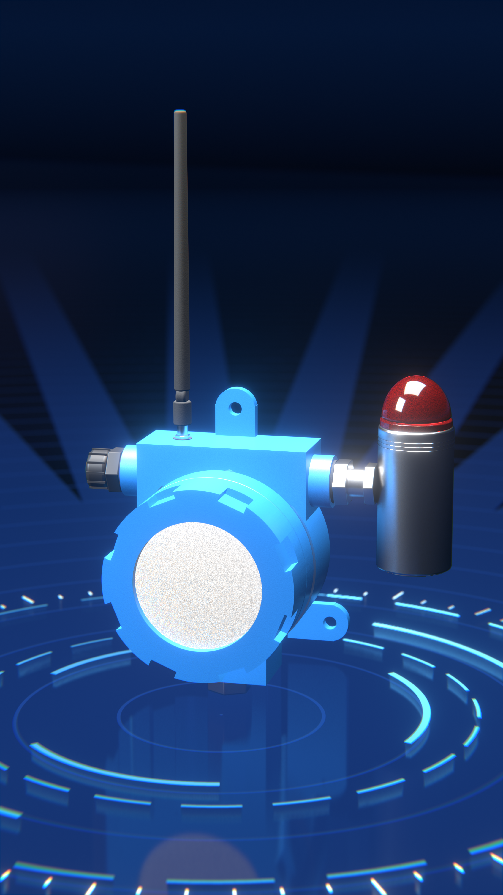
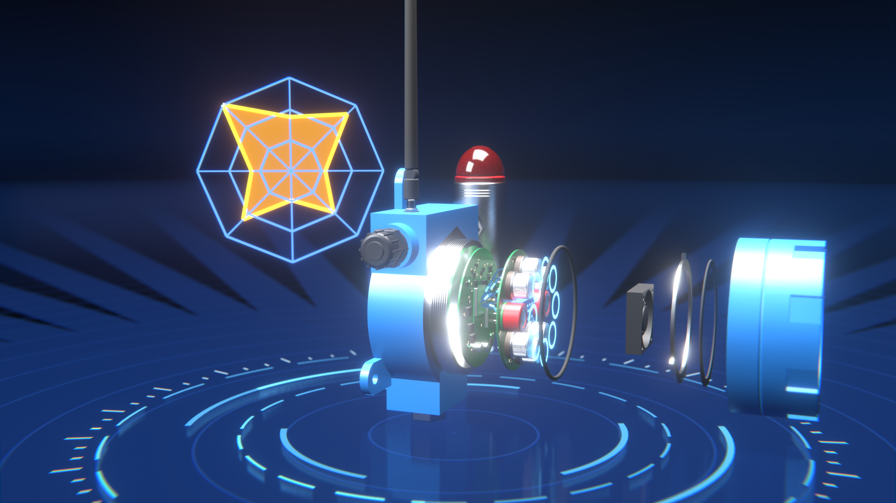
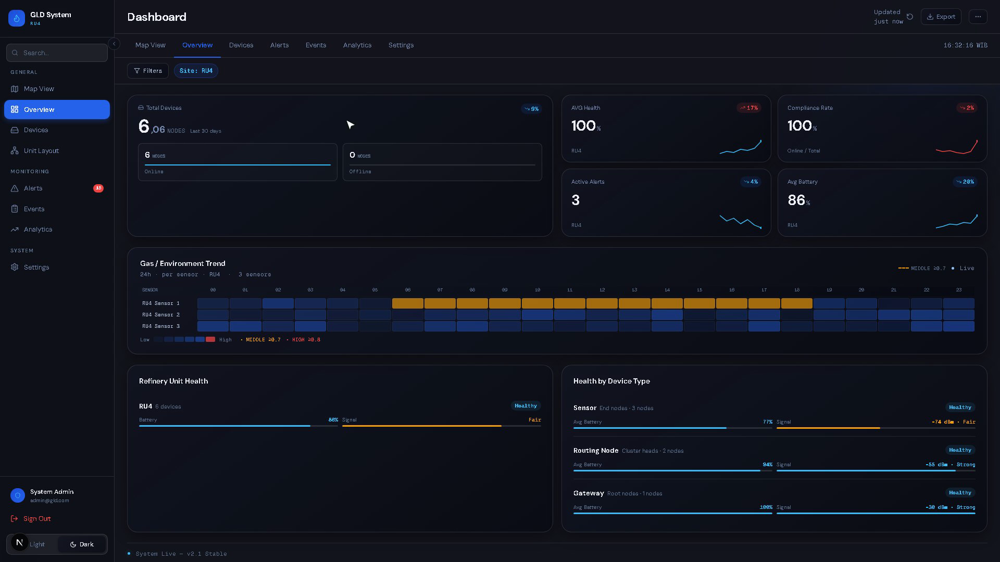
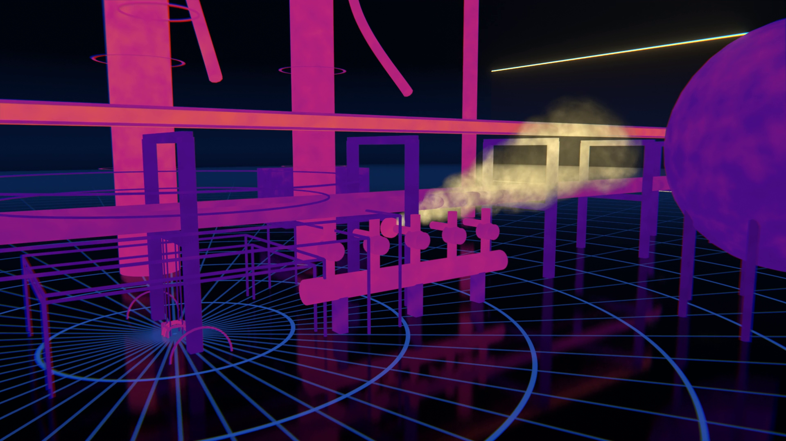

GAS LEAK DETECTION SYSTEMGENERASI KEDUA
SOLUSI DETEKSI KEBOCORAN GAS KILANG
GLD V2
Deteksi multigas berbasis edge AI dengan jaringan nirkabel self-healing.
Multigas, satu perangkatDelapan sensor gas membentuk sidik jari untuk mengenali jenis gas.
AI di dalam perangkatKlasifikasi gas langsung di node, independen dari server.
Nirkabel & self-healingPrivate mesh LoRa 920 MHz, tanpa kabel data ke ruang kontrol.
Alarm seketikaAlarm lokal menyala, notifikasi push langsung ke operator.
ILUSTRASI 3D · GLD V2
GLD V2 · GAS LEAK DETECTION SYSTEMSOLUSI
01TANTANGAN & SOLUSI
Kebocoran gas tak kasatmata. Kecepatan deteksi menentukan tingkat risiko.
PENDEKATAN KONVENSIONAL
- Satu detektor untuk satu jenis gas
- Kabel data ditarik ke ruang kontrol
- Mahal dan sulit diperluas
→
SOLUSI GLD V2
- Delapan sensor dalam satu perangkat untuk deteksi multigas
- Nirkabel: private mesh LoRa, tanpa kabel data
- Mudah diperluas: titik pantau baru tanpa tarik kabel data
02DI DALAM PERANGKAT

1
2
3
4
5
6
7
8
9
ILUSTRASI 3D · GLD V2 TERURAI
1Sidik jari gas · pola respons 8 sensor
2Antena LoRa · 920 MHz
3Beacon · alarm lokal
4Enclosure · catu daya 24 VDC
5Motherboard · mikrokontroler & AI edge
6Sensor board · 8 sensor gas
7Kipas · sirkulasi udara ke sensor
8Mesh pelindung & gasket
9Tutup depan
03CARA KERJA
01 · SAMPEL
Udara masuk
Kipas menarik udara sekitar melalui mesh ke ruang sensor.
02 · RESPONS
8 sensor membaca
Sensor metal-oxide menghasilkan pola respons khas tiap gas.
03 · KLASIFIKASI
AI mengenali gas
CNN dua cabang, kuantisasi 8-bit, berjalan di perangkat.
04 · ALARM
Peringatan seketika
Beacon menyala, alarm dikirim push lewat LoRa mesh.
GLD V2 · GAS LEAK DETECTION SYSTEMSISTEM
04ARSITEKTUR SISTEM
Dari sensor ke ruang kontrol, tanpa kabel data

ILUSTRASI 3D · KEBOCORAN TERDETEKSI → ALARM PUSH · UKURAN PERANGKAT DIPERBESAR
05NILAI BAGI OPERASI KILANG
RESPONS
Alarm tanpa menunggu
Push alarm tidak menunggu siklus pengambilan data.
CAKUPAN
Multigas di satu titik
Satu perangkat membaca pola beberapa jenis gas.
INSTALASI
Tanpa kabel data
Cukup catu 24 VDC; data lewat radio LoRa.
KEANDALAN
Self-healing
Rute dipulihkan otomatis bila satu Cluster Head terputus.
06DASHBOARD OPERATOR

RINGKASAN SISTEM
Status unit, konsol alarm dengan acknowledge operator, log kejadian, tren dan heatmap · rekaman aplikasi dengan data demonstrasi.
GLD V2 · GAS LEAK DETECTION SYSTEMSPESIFIKASI & BUKTI
07SPESIFIKASI RINGKAS
| Sensor | 8 sensor gas metal-oxide dalam satu perangkat (prinsip electronic nose) |
| Kecerdasan | CNN dua cabang, kuantisasi 8-bit, inferensi langsung di mikrokontroler |
| Komunikasi | LoRa 920 MHz private mesh multi-hop: node → Cluster Head → Gateway |
| Pola data | Data normal: pull berkala dari Cluster Head · Alarm: push seketika |
| Alarm lokal | Beacon pada perangkat |
| Catu daya | 24 VDC |
| Integrasi | Server lokal & dashboard operator, independen dari internet dan jaringan TI kilang |
| Kemampuan gas |
LPGH₂CO₂CH₄CONH₃Benzena
tervalidasidata tersediatarget pengembangan · model dilatih di lokasi |
08TERUJI DI LAPANGAN & LABORATORIUM
Uji lapangan RU VII Kasim · November–Desember 2025 · GLD generasi pertama
Uji lapangan
RU VII Kasim
Nov–Des 2025 · GLD generasi pertama
Factory Acceptance Test
7 / 7 lulus
GLD generasi kedua · laboratorium
Jaringan mesh
8 Cluster Head
multi-hop & failover teruji · kampus ITB
09PENGEMBANGAN BERIKUTNYA

ILUSTRASI KONSEP
Integrasi kamera thermal: alarm titik & citra area terkorelasi
01
Deteksi titik
GLD multigas + edge AI
02
Pemantauan area
Kamera thermal
03
Satu dashboard
Alarm & citra terpadu
Tahap pengembangan berikutnya, belum termasuk ruang lingkup unit saat ini.
Pilot RU IV Cilacap
PT Pertamina Patra Niaga (Fungsi Reliability) × LAPI Ganesha Utama × Institut Teknologi Bandung
Gambar perangkat, jaringan & kamera thermal adalah ilustrasi 3D · dashboard memakai data demonstrasi